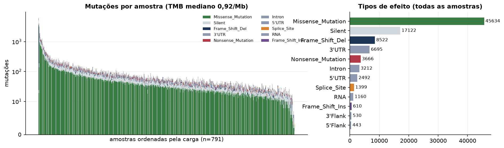
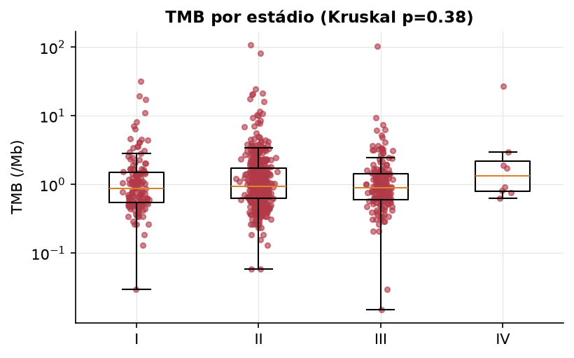
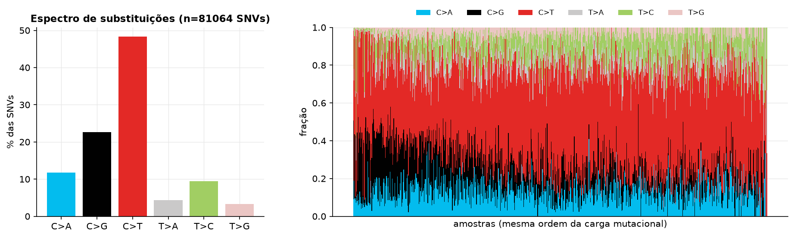
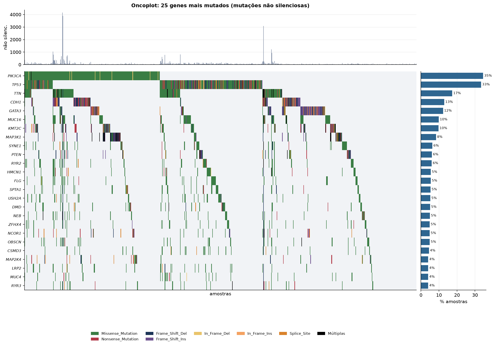
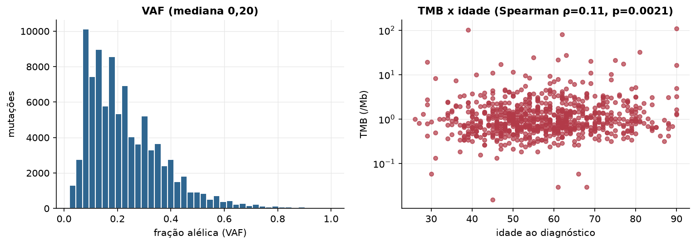

BRCA · Mutações somáticas
MC3 v0.2.8 (PanCanAtlas), exoma, chamadas consenso · gerado em 21/10/2026 18:47
791amostras sequenciadas
92.119mutações
0,92TMB mediano (/Mb)
18hipermutados (≥10/Mb)
Fonte: MC3 v0.2.8 (PanCanAtlas)
O MC3 inclui só amostras tumorais com exoma sequenciado e só mutações que passaram nos filtros de consenso. Amostras sem nenhuma mutação não aparecem no arquivo e entram aqui com carga zero quando estão na lista de amostras.
Principais resultados
- 92.119 mutações em 791 tumores, das quais 60.465 alteram proteína. A carga mutacional mediana é 0,92 mutações não silenciosas por Mb (exoma de ~38 Mb).
- 18 amostra(s) hipermutada(s) (≥ 10/Mb): TCGA-3C-AALI-01, TCGA-5L-AAT1-01, TCGA-AC-A23H-01, TCGA-AC-A5XS-01, TCGA-AO-A03M-01, TCGA-AO-A128-01, TCGA-BH-A0B6-01, TCGA-BH-A18G-01.
- Genes mais mutados: PIK3CA (35%), TP53 (33%), TTN (17%), CDH1 (13%), GATA3 (12%), MUC16 (10%), KMT2C (10%), MAP3K1 (8%).
- A substituição mais frequente é C>T (48,4% das SNVs). Predomínio de C>T costuma refletir desaminação de citosinas metiladas (assinatura de envelhecimento); C>A sugere tabaco ou dano oxidativo; T>C pode indicar exposições específicas.
- Correlação entre idade e TMB: ρ=0.11 (p=0.0021).
Carga mutacional


Espectro de substituições

Genes mais mutados

Genes com mais tumores mutados
| gene | amostras_mutadas | % das amostras |
|---|---|---|
| PIK3CA | 273 | 34.5 |
| TP53 | 264 | 33.4 |
| TTN | 137 | 17.3 |
| CDH1 | 102 | 12.9 |
| GATA3 | 97 | 12.3 |
| MUC16 | 78 | 9.9 |
| KMT2C | 77 | 9.7 |
| MAP3K1 | 66 | 8.3 |
| SYNE1 | 50 | 6.3 |
| PTEN | 48 | 6.1 |
| RYR2 | 47 | 5.9 |
| HMCN1 | 43 | 5.4 |
| FLG | 43 | 5.4 |
| SPTA1 | 42 | 5.3 |
| USH2A | 41 | 5.2 |
| DMD | 40 | 5.1 |
| NEB | 39 | 4.9 |
| ZFHX4 | 38 | 4.8 |
| NCOR1 | 38 | 4.8 |
| OBSCN | 38 | 4.8 |
| CSMD3 | 35 | 4.4 |
| MAP2K4 | 32 | 4 |
| LRP2 | 32 | 4 |
| MUC4 | 32 | 4 |
| RYR3 | 32 | 4 |
| RUNX1 | 32 | 4 |
| NF1 | 30 | 3.8 |
| SYNE2 | 30 | 3.8 |
| CSMD2 | 30 | 3.8 |
| HUWE1 | 29 | 3.7 |
Fração alélica e idade
